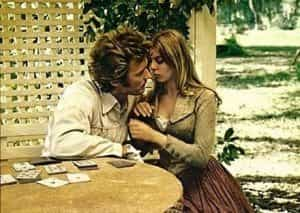

Bob Smith is a man in search of the truth. His favorite quotes are, "We're all fools on this earth, and I can be no different"; "I know it's true, I read it at the LIE-brary"; and "The truth is not misogynistic, it's just the truth".


Upon the release of the movie The Beguiled in 1971, New York Times film critic Vincent Canby referred to this in-your-face, red-pill masterpiece as, “…a sensational, misogynistic nightmare.” The truth is, they just don’t make them like this one anymore—probably because the gay, Commie, SJW censors in Hollywood would pee their little Calvin Klein panties, throw a tofu-tossing hissy fit, and faint dead away to the floor, shortly after viewing this powerful, Don Siegel-directed film as a rough cut.

The script for this must-see film for men was written by Albert Maltz, and is based on the 1966 Southern Gothic novel, “A Painted Devil”, written by Thomas P. Cullinan. According to director Don Siegel, “The Beguiled” was largely based around, “…the basic desire of women to castrate men”. (Quote taken from “Clint: The Life and Legend”, by Patrick McGilligan, 1999, Harper-Collins London, pg. 186).
Released just five months before “Dirty Harry” in 1971, Clint Eastwood portrays Union soldier John McBurney, a stone-cold, most-decidedly alpha male, who quickly begins pulling more pussy than a Beverly Hills gynecologist, while convalescing at a girls-only seminary situated in the Mississippi back country, shortly after being injured in a nearby Civil War battlefield and summarily being rescued by one of the seminary’s students, 12-year-old Amy (played by Pamelyn Ferdin).
Eastwood’s alpha-male character actually gives the pig-tailed, wide-eyed preteen a long, deep kiss, shortly after she finds him bloody and battered in the woods near the seminary—a scene that was probably included in the film solely to enrage the SJW critics of the time (like Vincent Canby).
Only two of the eagerly available Southern belles at the school are on McBurney’s “Might Bang” sexual radar, as he proceeds to attract most of the young women who cross his path, not to mention a couple of the older ones, too, who are just as horny and competitive as their younger counterparts (as all red-pill males fully realize).
A Quaker by faith, McBurney spots a seminary staff member named Edwina (pictured above, and played by Elizabeth Hartman), and he mistakenly believes that she is a bona fide, virginal, LTR unicorn; in a fit of pre-copulatory passion, he promises to marry her immediately after the war is over.
But at that point, Edwina stops him dead in his tracks and doesn’t let him seal the deal (having already gotten exactly what she wanted), and McBurney’s resultant sexual frustration eventually leads him to the bed of 17-year-old hottie, Carol (played by Jo Ann Harris), who has continually thrown her pussy at him, from the very first moment she laid eyes on him.
Today’s SJW’s and feminists would have a field day with this film: “Creeper! How dare you bang that 17-year-old hottie, when you could have my flabby, cottage-cheese-dimpled thighs, and the rest of my 45-year-old, projectile-vomit-inducing body. Pedo!!!”

Never mind that they all have “pedos” in their extended family trees, and most likely within their direct matriarchal lineage—yes, many of their great-grandmothers or great-great-grandmothers married much older men, when they were as young as 13 years of age (or even younger, in some cases), and if that hadn’t happened, these bitter, used-up bitches wouldn’t even be here.
But we’re not talking about logic at the moment, even though young females, as a rule, mature much faster in a physical sense than do young males, and older men typically make great providers and mentors for younger females who haven’t been stretched out on the cock carousel.
We’re talking about hurricane-force, serially rejected, bitterly raging feminazis here, and the resultant malicious hamstringing of any men who exhibit sexual behaviors of which they disapprove (but usually only non-wealthy, heterosexual men, of course).
This film is very, very good—and Eastwood’s performance ranks right up there with anything else that he has ever done, especially in the film’s more horrifying sequences. Personally, I think this is Clint’s best work in a dramatic role, if perhaps a hair short of his turn in the already-beaten-to-death “Unforgiven.”

This darkly compelling film explores subject matter that wasn’t even widely considered to be taboo at the time—but most definitely is today—and it effectively demonstrates how an alpha male in a house full of young, horny sirens and older, jealous harpies, can quickly become the cock-of-the-walk in a matter of seconds…and then get knocked off his pedestal just as quickly, and with a resounding boom.
Clint Eastwood’s co-star, Jo Ann Harris was 21 years old at the time filming began, and she and Clint allegedly had a love affair that started at some undetermined point during the making of the movie, and lasted for a brief while thereafter, according to the International Movie Database.
The typical feminist’s response to this horrifying revelation, regarding the couple’s age disparity, might play out as follows:
“Oh my gosh. She was, like, 21 years old when shooting started and he was four days shy of being 41 when shooting ended – that’s cray-cray! Ewwwww. Like, if my carousel-riding, 41-year-old best friend hooked up with a hawt, 21-year-old pool boy, she would be like, so empowered, right? But Clint’s a total pervert…”
After voicing her displeasure, said feminist might waddle off in her flip-flops and sweat pants, and eagerly chug some Prozac…and then proceed to masturbate furiously, while fantasizing about Clint’s alpha-male, hot-bodied, Union-soldier character, as he comes a-courtin’, and bangs her hard and fast on the veranda, until she drifts off in blissful satisfaction, as she happily dreams that she, too, is a 17-year-old Southern belle, and wearing a billowing, taffeta dress—just like Jo Ann Harris’s character, in this wickedly accurate depiction of how women are very likely to behave when fighting over alpha cock.

The headmistress at the seminary, Martha Farnsworth (played by legendary stage and screen actress, Geraldine Page), has a major thing for Clint’s character, John McBurney, and some of Martha’s most lurid sexual fantasies surrounding McBurney are showcased in the film via dream sequences—including a kinky, three-way sex scene that features Page’s character, along with McBurney and his bride-to-be, Edwina.
We are also privy to some flashbacks of the headmistress’s real sexual encounters, which feature her very own (drum roll)…brother. Yes, this killer, full-throttle, red-pill film brutally and accurately hacks at the root of what “normal” sexual fantasies are really all about, when it comes to the fairer sex, and I believe that Don Siegel and Clint Eastwood pushed hard to make it for the following reason—to serve as a major red-pill warning for all unsuspecting males who were a few notches north of average in the desirability department.
One of the other titles contemplated by Universal Pictures for this truly beguiling film, which was allegedly director Don Siegel’s personal favorite of all the films he directed during his prolific career, was “Pussy-footing Down at the Old Plantation”.
(I got that straight from IMDB, and I wouldn’t lie to you, unless you were a really hot female of consenting age with major daddy issues and I couldn’t figure out another way to bang you.)
The seminary’s headmistress has an intimate conversation with John McBurney, late one evening, that is laced with sexual innuendo, in the latter portion of this film. As she exits McBurney’s room, she leaves his bedroom door unlocked (it had always been kept locked prior to that point, in order to prevent his escape), and she fervently hopes that McBurney will find his way into her bed.
But McBurney gets waylaid by the 17-year-old Carol, who makes him an offer he just can’t refuse. Their ensuing sexual encounter results in McBurney being shoved down a flight of stairs by his enraged bride-to-be, Edwina.
The headmistress, after discovering that McBurney has failed to fall into her man-trap (double entendre intended), hatches a devious scheme in order to fulfill her long-term, fervent desires—because Martha fully intends to keep McBurney around as her personal cock-carousel stallion for as long as is humanly possible.
Even though what follows is a seriously twisted bit of medical mutilation, maliciously devised by Geraldine Page’s heartless, sexually frustrated character, it pales in comparison to what ultimately awaits McBurney in the film’s bizarre and horrific climax, which I won’t spoil for you, because…well…that would just be wrong.
But let me put it to you this way, because it’s a bona fide, red-pill truth that all alphas-in-training really need to learn at some point, so you had better bind this one around your heart, right here and right now—hell hath no fury like a group of women scorned.
As a final note, a remake of “The Beguiled” is currently in the pre-production stages and is scheduled for release in 2017, featuring Colin Ferrell as John McBurney, and Nicole Kidman as headmistress Martha Farnsworth. This remake is being directed by Sofia Coppola, who also wrote the screenplay, so it might be fair to anticipate a complete and total diversion from the novel on which the original film was based—a diversion with a decidedly feminist perspective.
Read More: A Politically Incorrect Film That Offers A Ringside Seat To A Futile War